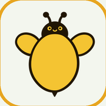
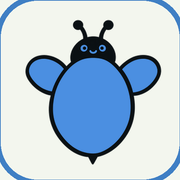
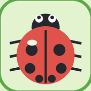
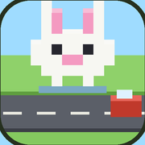

Kid Games
Tap a game to play. Each one can live on your home screen and works without internet.

Pollen QuiltSend the bees, stitch the picture.
Pollen Quilt MathAdd the bees to finish the picture.
Spotty's Maze MunchMunch every mini bug in a wiggly maze.
Hoppity LanesHop across roads, rails and rivers.Put a game on the iPad home screen
- Open the game in Safari (tap it above) and wait for it to load.
- Tap the Share button (square with an arrow), then Add to Home Screen, then Add.
- Open it from the new home-screen icon. After that first visit it plays offline.